CloudPocket · Production UI review
Updated 28 October 2026. These are native Flutter render fixtures, not browser screenshots or proof of physical-device behavior. Element explanations are carried forward from the earlier walkthrough; the current release gate report takes precedence for security and release claims.
The web client has a new matching light/dark design. Browser visual verification remains blocked by the saved origin permission setting.
Changes and verification · Release gates
Onboarding
Flutter-rendered fixture, 393 × 852 logical pixels. Synthetic network and session data.
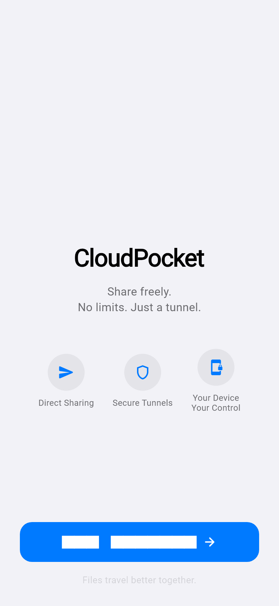
Home: Send Files
Flutter-rendered fixture, 393 × 852 logical pixels. Synthetic network and session data.
- CloudPocket / Share — App identity and screen title.
- Network subtitle and IP pill — Shows detected network information. The fixture uses 192.168.1.42; native testing used the emulator's 10.0.2.15. The pill no longer invents an IP or pretends a server is already listening.
- Send Files / Receive Mode / Room — Changes the selected task. Receive clears selected send files. Receive to Room now switches correctly; navigating between bottom tabs preserves the current selection.
- Send files card — Explains browser-based sharing. Select Files / Folder opens the file selector; with selected items it shows their count and Edit.
- PIN protection switch and row — Enables password protection and opens the security sheet. A password must actually be configured before launch; cancelling an empty setup no longer creates an effectively open room.
- One-time downloads — Send-only vault control. It now sets an explicit limit of one download per file. It is disabled with an explanation in Receive and Room modes.
- Internet tunnel row — Opens the provider selector, including configured providers and their setup dialogs.
- Local / Cloudflare / Auto — Local disables public tunnelling; Cloudflare selects Quick Tunnel; Auto chooses automatic provider selection. Other custom providers do not falsely highlight Cloudflare.
- Start Sharing — Starts the server for the selected files. Missing files produce an error; a PIN-enabled session without a configured password opens security setup. Repeated starts are disabled while starting.
- QR caption / error text — Explains what launch produces and displays a start failure when present. Scroll if the action is below the floating navigation bar.
- Bottom navigation — Home, Received, Transfers, History and Settings. Tap or drag across the bar. Tabs keep their local filter and mode state; inactive animations are disabled. Repeated drags now reset correctly.

Home: Receive Mode
Flutter-rendered fixture, 393 × 852 logical pixels. Synthetic network and session data.
- Radar and download tile — Animated receiving illustration, not transfer progress.
- Ready to Receive Files — Explains the local upload workflow.
- Receive folder caption — Refers to the configured receive folder. The fabricated 48.2 GB free figure and progress bar were removed.
- Privacy / connection controls — PIN and tunnel choices work as on Home. One-time downloads is explicitly unavailable because this screen accepts uploads.
- Start Receiving — Starts the upload server. Verified with a real 58-byte test upload; the Received list refreshed and /api/files remained empty.

Home: Room
Flutter-rendered fixture, 393 × 852 logical pixels. Synthetic network and session data.
- Shield card — Introduces temporary rooms. Messages remain in memory; media uses temporary private cache.
- 5 / 15 / 30 min / 1 / 2 hr — Writes the actual session expiry. Previously this changed only the highlight, and 24 hr was displayed despite the room engine supporting at most two hours.
- Privacy controls — PIN and reach configure the room. One-time download limits are a Send Files feature.
- Create Room — Opens room configuration. Local connection choice is now preserved on entering room setup.
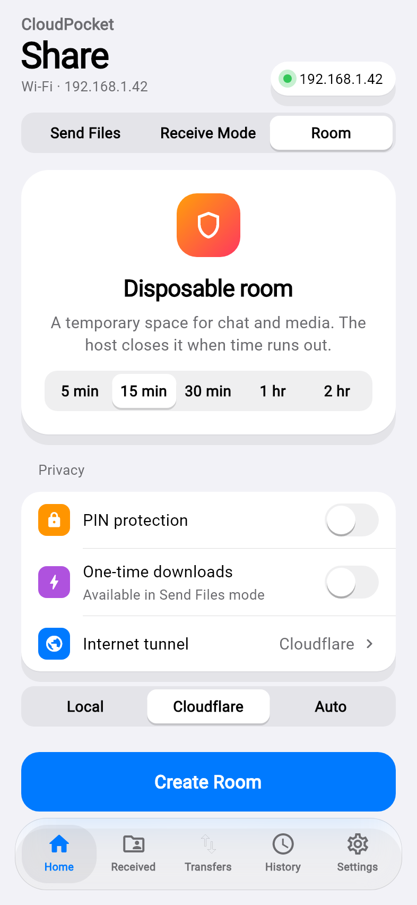
Received
Flutter-rendered fixture, 393 × 852 logical pixels. Synthetic network and session data.
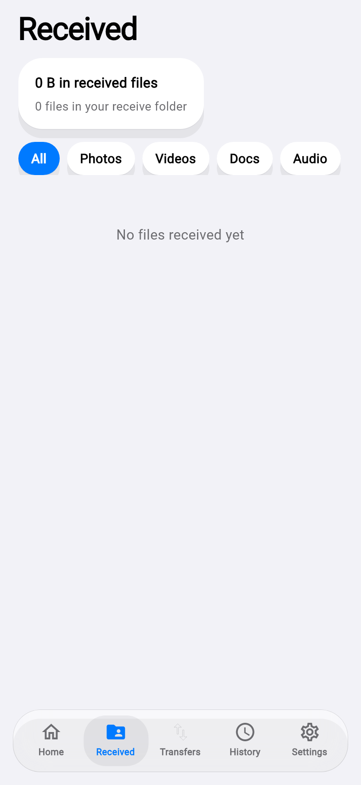
Transfers: empty and filters
Flutter-rendered fixture, 393 × 852 logical pixels. Synthetic network and session data.
- Transfers / aggregate speed — Screen title and server-reported aggregate throughput.
- All / Downloads / Uploads — Filters records by direction.
- No active transfers — Empty list state.

History
Flutter-rendered fixture, 393 × 852 logical pixels. Synthetic network and session data.
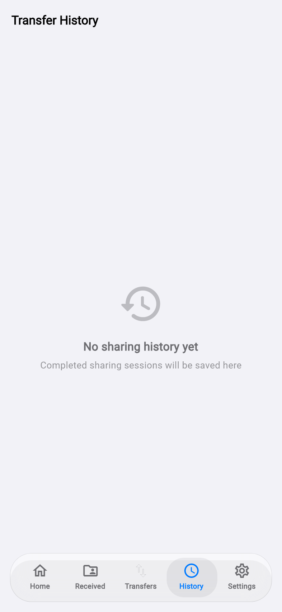
Settings Top
Flutter-rendered fixture, 393 × 852 logical pixels. Synthetic network and session data.
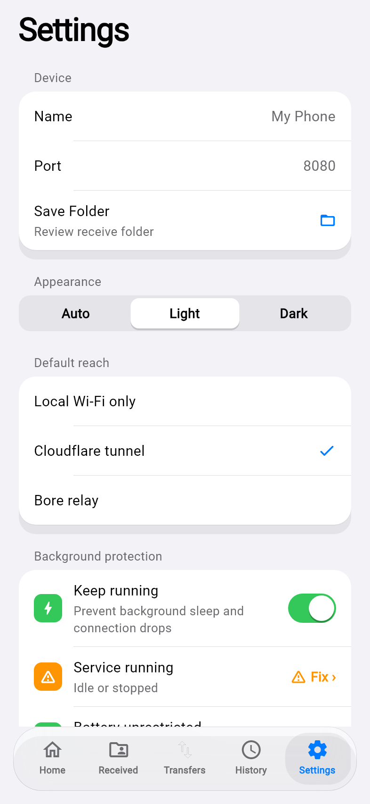
Settings Bottom
Flutter-rendered fixture, 393 × 852 logical pixels. Synthetic network and session data.
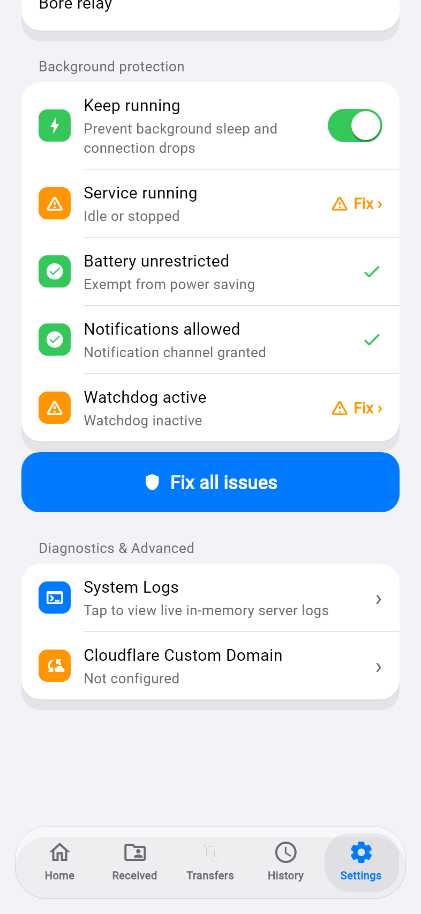
File Selector
Flutter-rendered fixture, 393 × 852 logical pixels. Synthetic network and session data.
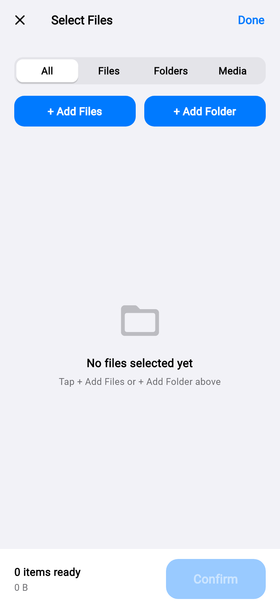
Room: host setup
Flutter-rendered fixture, 393 × 852 logical pixels. Synthetic network and session data.
- Close / system Back — Returns to Home and clears room configuration mode; Send cannot accidentally start as a room after exiting setup.
- Host Room / Join Room — Switches host and participant setup.
- Temporary Burner Room card — Description of the room's intended temporary lifecycle. Attachments use private cache rather than RAM only.
- Room Name — Sets the displayed room name.
- Reach — Shows local-only or the selected public provider. A local choice from Home is now preserved.
- Self-Destruct Timer — Opens supported durations. Defaults longer than the engine's two-hour room limit are normalized before presentation.
- PIN Protection — Opens the room security sheet.
- Hotspot notice — Displayed for Cloudflare Quick when applicable. Its Settings action opens Android hotspot settings.
- Launch Disposable Room — Starts the configured room. Empty required PIN configuration is rejected before launch.
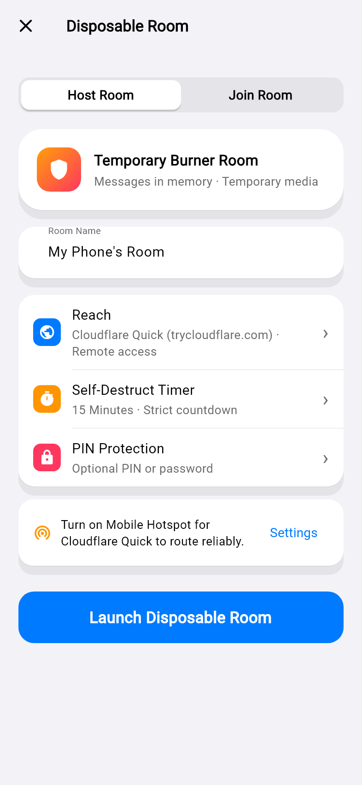
Room: join setup
Flutter-rendered fixture, 393 × 852 logical pixels. Synthetic network and session data.
- Scan Host QR Code — Opens the camera scanner.
- Chat ID or Room Link — Accepts a full invite URL or dynamic Chat ID. Chat ID resolution now requires a PIN and never downloads an invite token from public discovery.
- Paste icon — Parses a copied room link and fills its supplied details.
- Room PIN / eye — PIN required for Chat ID joins and for PIN-protected full links; eye toggles obscuring.
- Your Nickname — Name used in the room.
- Join Room (Secure Mode) — Validates input, resolves a Chat ID if needed and opens the native room chat.

Room Timer
Flutter-rendered fixture, 393 × 852 logical pixels. Synthetic network and session data.
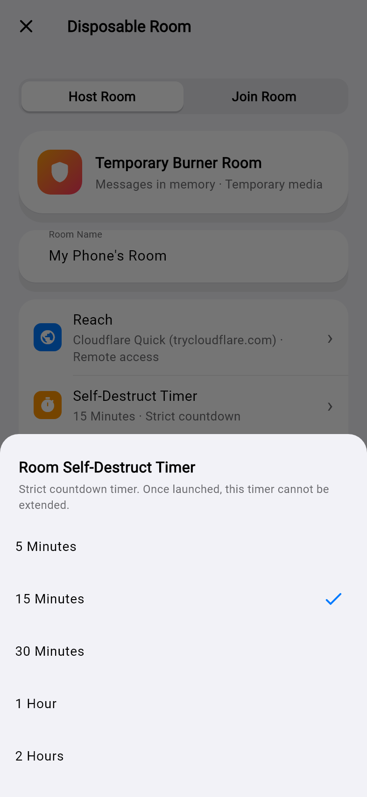
Sharing Live
Flutter-rendered fixture, 393 × 852 logical pixels. Synthetic network and session data.
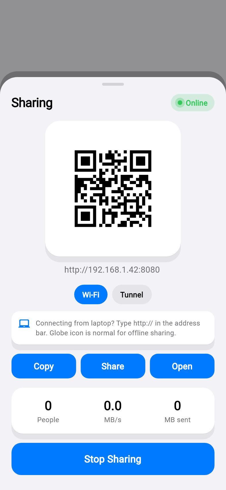
Sharing Actions
Flutter-rendered fixture, 393 × 852 logical pixels. Synthetic network and session data.

Tunnel failure
Flutter-rendered fixture, 393 × 852 logical pixels. Synthetic network and session data.
- Tunnel failed state — Explains that public allocation failed while the local server remains available.
- Retry — Calls the tunnel retry action; covered by an existing widget test.
- Local chips — Allow continuing with an available local interface.

Live room
Flutter-rendered fixture, 393 × 852 logical pixels. Synthetic network and session data.
- Room / Encrypted badge — Room status presentation. The badge is not proof that relays cannot obtain admission key material; see the security limitations below.
- Countdown ring — Remaining lifetime and progress; pending-first-join state is separate from the authoritative running countdown.
- Room code — Copies the dynamic code when useful. The caption explains that Chat ID joins need a PIN; token-only rooms use invite links.
- PIN — Displays/copies the host-configured PIN where present. These screenshots contain fixtures, not user credentials.
- Invite link & QR — Opens the invitation sheet, including QR/link sharing and browser-password options.
- People / app/browser participant counts — Room participant statistics.
- Open Chat — Joins the host chat with its room token and PIN. Previously token-only hosts omitted their own token.
- End and Erase Room — Confirms ending the room, disconnecting participants, clearing chat RAM and unlinking cached media. It does not securely shred flash storage.
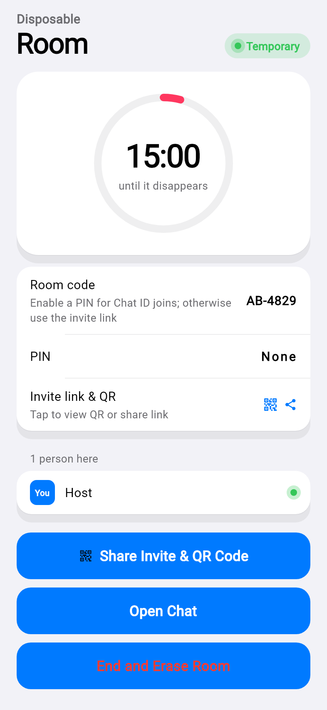
Room Actions
Flutter-rendered fixture, 393 × 852 logical pixels. Synthetic network and session data.
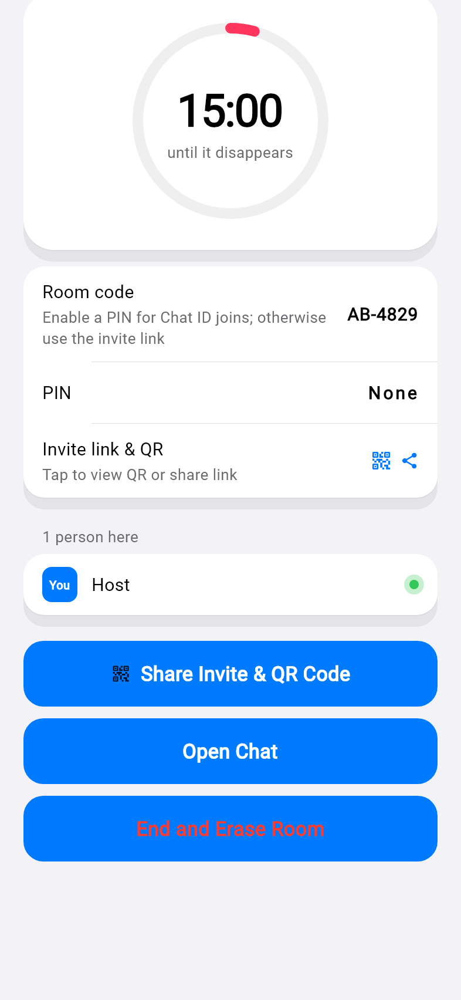
Transfer Active
Flutter-rendered fixture, 393 × 852 logical pixels. Synthetic network and session data.
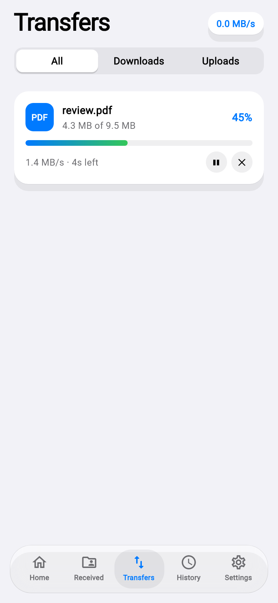
Cloudflare Setup
Flutter-rendered fixture, 393 × 852 logical pixels. Synthetic network and session data.
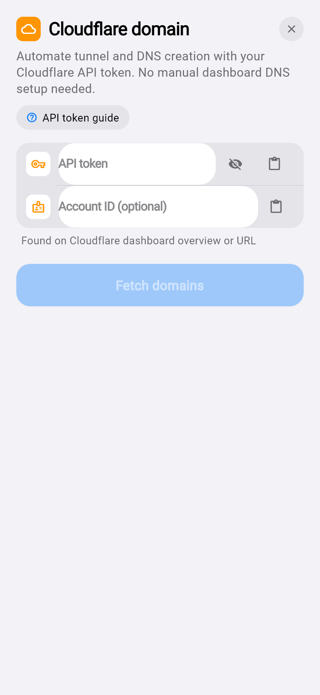
Bore relay setup
Flutter-rendered fixture, 393 × 852 logical pixels. Synthetic network and session data.
- VPS setup guide — Opens the Custom Bore VPS help tab.
- Hostname or IP / Control port — Relay configuration. The default control port is 7835.
- Save relay — Validates and saves the relay choice.
- Reset to bore.pub — Restores the public relay configuration.
- Transport limitation — Bore uses plaintext transport; no speed or confidentiality guarantee is established by this review.

Tunnel Guide
Flutter-rendered fixture, 393 × 852 logical pixels. Synthetic network and session data.
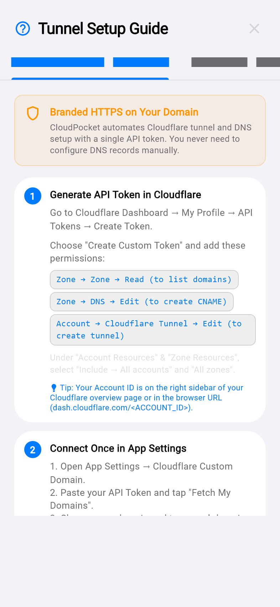
Private media viewer
Flutter-rendered fixture, 393 × 852 logical pixels. Synthetic network and session data.
- Filename / view-only caption — Identifies the media and explains the in-app viewing policy.
- Text viewer — Displays a bounded text preview. The screenshot uses a small synthetic text fixture.
- Image / PDF / audio / video variants — The same screen selects image preview, page navigation or native player controls by media type. Native codec/PDF playback was not exercised on a physical ARM64 device.
- Dismiss & Purge — Closes the view and removes temporary viewer copies where created. It does not promise secure flash erasure.
- Screenshot protection — Native guarded screens were not captured or modified to bypass FLAG_SECURE. The image is from Flutter's test renderer, not an Android screenshot of protected content.
Native chat
Flutter-rendered fixture, 393 × 852 logical pixels. Synthetic network and session data.
- Room back control — Returns to the room dashboard. Closing chat no longer leaves asynchronous callbacks calling setState on a disposed screen.
- Room code / timer — Uses the server's roomCode and remainingSeconds fields.
- Message timeline — Loads the server's messages history and distinguishes text, system and media envelopes. A real local connection verified the rendered history fixture.
- + attachment — Selects supported room media and streams an upload. Native requests now include room credentials for protected media endpoints.
- Message field / send arrow — Sends typed text, using AES-GCM payload encryption when a room secret is available.
- Media bubble — Opens the private viewer. Returning restores the chat's screenshot guard.
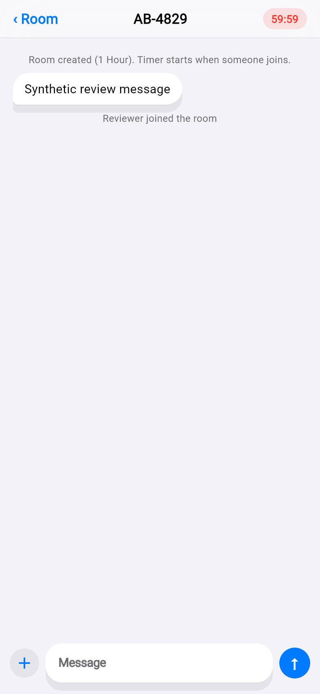